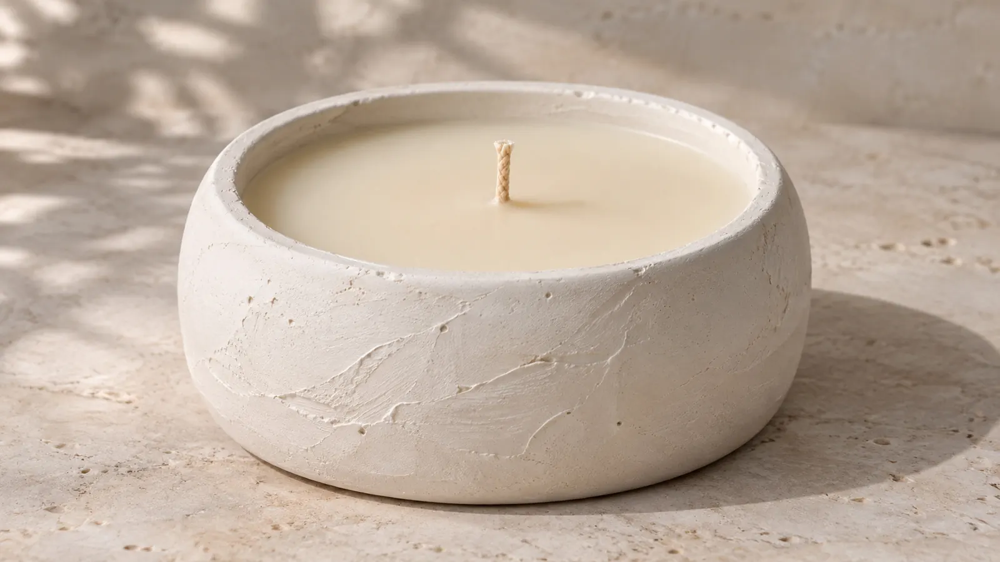
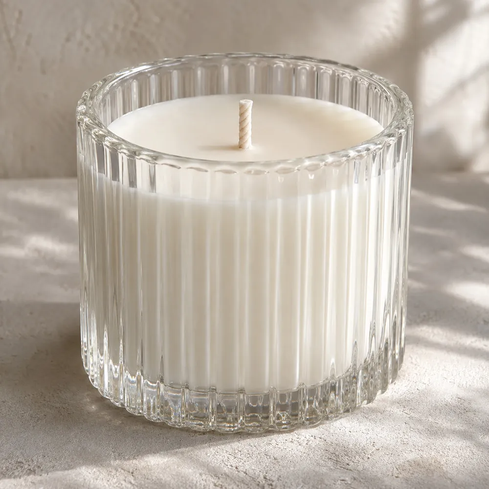
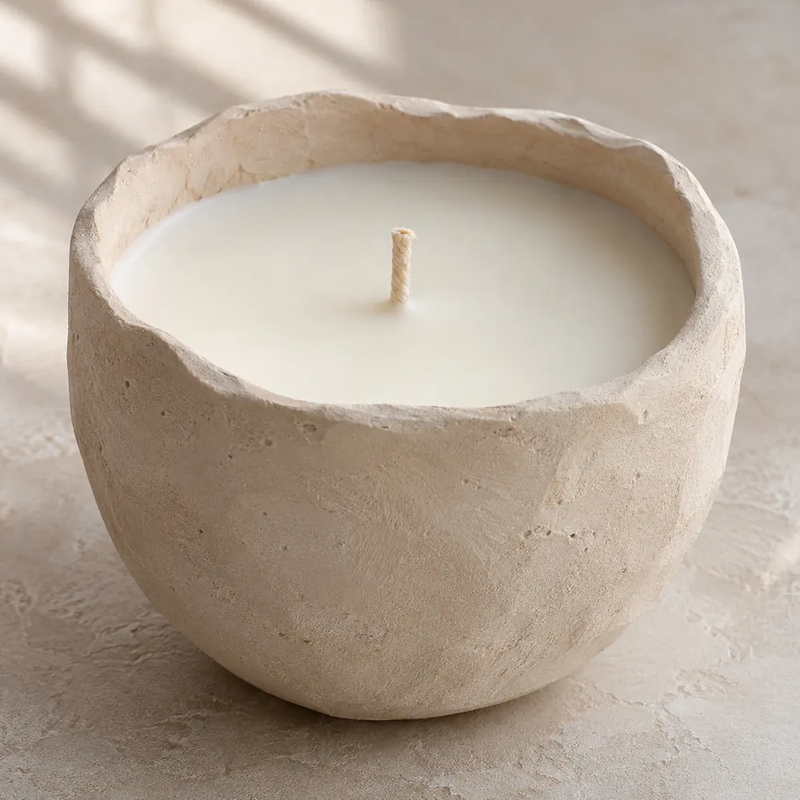

Artesanías Sol y Luna
Velas artesanales en bases de vidrio y yeso
Hechas a mano, una por una. Elegí la tuya, sumala al carrito y coordinamos la entrega por WhatsApp.

Elegí tu vela
Vidrio o yeso: dos luces distintas
Sol
Vidrio
La luz atraviesa el vaso: se ve la cera entera y, encendida, la llama brilla a través del vidrio.
Ver velas en vidrio (5)
Luna
Yeso
Mate y con textura, como la superficie de la luna: la luz queda adentro del cuenco.
Ver velas en yeso (4)
Pedí en tres pasos
- 1
Elegí tus velas
Sumalas al carrito: podés combinar vidrio y yeso.
- 2
Mandanos el pedido
El carrito arma el mensaje de WhatsApp con cada vela y el total.
- 3
Coordinamos pago y entrega
Te confirmamos disponibilidad y acordamos cómo te llega.
Antes de encenderla
¿Cómo la enciendo la primera vez?
Dejala prendida hasta que se derrita toda la superficie, de borde a borde. Así la cera baja pareja y no se hace un pozo en el centro.
¿Hay que cortar la mecha?
Sí: antes de cada encendido dejala en unos 5 mm. La llama queda más baja y no tizna la base.
¿Qué hago con la base cuando se termina?
Sacá el resto de cera y reusala: el vaso de vidrio se lava con agua caliente y el cuenco de yeso se limpia en seco y queda como portacosas.
¿Puedo pedir aromas o armar un regalo?
Escribinos por WhatsApp y te contamos qué aromas y presentaciones hay para regalar.
Mapa de referencia · ubicación a confirmar
Dónde estamos
Elegí tu vela y escribinos
Te confirmamos disponibilidad y coordinamos el pago y la entrega por WhatsApp.
- +54 9 11 4917-5373
- @Tatysj19
- Zona a confirmar